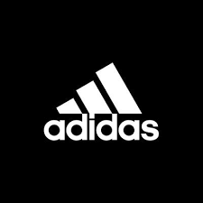

Quem somos

Somos o maior clube do mundo.
O Manchester United Football Club é um clube inglês, sediado em Trafford, na região metropolitana de Manchester, sendo um dos times mais populares e mais bem sucedidos da Inglaterra e do mundo. Manchester United é o clube de maior sucesso na Inglaterra, tendo ganho 38 títulos importantes desde que Sir Alex Ferguson tornou-se treinador em 6 de novembro de 1986. Em 1968, se tornou o primeiro clube inglês a vencer a Copa dos Campeões, atual Liga dos Campeões, batendo o Benfica por 4–1, ganhando a segunda Liga dos Campeões em 1999, e a terceira em 2008. O United ultrapassou o seu rival Liverpool em conquistas no ano de 2011, ao atingir a marca de 19 títulos do Campeonato Inglês.